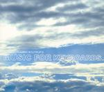

| Artist: | Lars Boutrup |
| Title: | Music For Keyboards |
| Label: | Excess Records EXR1202 |
| Length(s): | 44 minutes |
| Year(s) of release: | 2005 |
| Month of review: | [06/2006] |
| 1) | The Perfect Stranger | 2.15 |
| 2) | Agent Orange | 6.04 |
| 3) | The Day After | 5.33 |
| 4) | Alla Gypsy | 3.10 |
| 5) | Flying In The Sky | 2.43 |
| 6) | Emersong | 6.53 |
| 7) | Northern Lights | 4.40 |
| 8) | While The City Sleeps | 5.42 |
| 9) | Rockall | 8.54 |
Agent Orange is quite a bit more up-beat, almost danceable, especially with the beat present in this tune. For the rest, the keyboards simple solo over the drum beat, giving me a bit of a Harold Faltermeyer/Jan Hammer feel. The interlude has some strong Jarre like church organish play, but on the whole, the music is a bit too commercial for my tastes.
The Day After is quite a difference with its slow majestic beginning. The second half had slow drumming, some of them backwards, and the sound stays majestic with long sustained notes.
Alla Gypsy is quite frolic and fast, with the keys having a bit of a marimba feel, light to the touch. Towards the end more elements come in, and the sound becomes fuller. Flying In The Sky is more in the vein of The Day After with long sustains and full chords. There are elements of drama and maybe a bit of film music here.
Now who might have inspired Emersong? The song is bombastic, but surprisingly not flashy at all. More like ponderous and brassy. Still, of the songs thus far it sounds the most 'proggy'. Only at the very end do the typical ELP trademarks come in.
Northern Lights is a slow opener again, but this time we quickly move into an up-beat section, with orchestral elements. The music has strongly filmic aspects as well, and strangely enough this gives no problems with the monotonous beat.
While The City Sleeps opens with piano, and this is pretty much what you get. I mean there are some keyboard elements as well. but the semi-clasicalness of the piano is all-pervading. In the second half, we move more into the direction of people like Fonya, do it yourself progrock artists with a focus on keyboards. The longest tune is Rockall and is reserved for last. The track opens darkly, but soon mellow synths set in. The percussion is quite pronounced throughout, and overall the bombast is pervasive. The keyboard lines are not particularly likable though. I guess, the reference point here is Vangelis, although the melodies are less interesting.